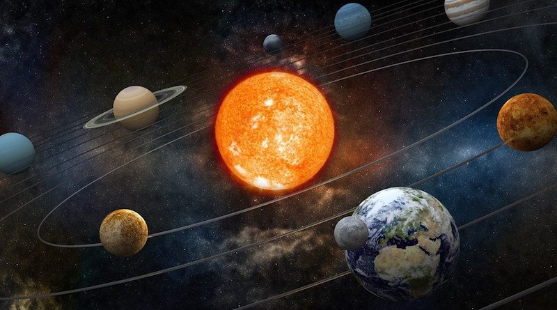

Around 1609-1621 Johannes Kepler devised his three laws of planetary motions.
These were a big deal because the theory of a sun centered solar system was still relatively new,
and these laws 'fixed' some of the errors in the predictions of the motions of the planets.
Kepler's Laws of Planetary Motion are:
The orbit of a planet is an ellipse with the Sun at one of the two foci.
A line segment joining a planet and the Sun sweeps out equal areas during equal intervals of time.
The square of a planet's orbital period is proportional to the cube of the length of the semi-major axis of its orbit.
The data collected by astronomers in the late 16th/early 17 centuries agreed very well with the predictions generated by these laws.
These laws are phenomological, they describe motion accurately, but not mechanisms.
Half a century later, Newton proposed his theory of gravitation and his laws of motion which helped explain more.
Newton tried to recreate Kepler's Laws in his derivations and had some success, although there are some questions about his proof of the first law.
(See Weinstock 1994 and Wilson 1994 for more discussion.)
Today we will work through some exercises and notes to prove Kepler's Laws assuming Newton's Law of Gravitation is correct.
Using Newton's Second Law of Motion, \(\mathbf{F} = m\mathbf{a}\), and his Law of Gravitation ,
$$\mathbf{F} = -\dfrac{GMm}{r^3}\mathbf{r},$$
show that the orbit of a planet around the sun is a plane curve (i.e. two dimensional).
(Here \(\mathbf{F}\) is the gravitational force on the planet, \(m\) and \(M\) are the masses
of the planet and the sun, respectively, \(G\) is a constant, and \(r = |\mathbf{r}|\).
Equate the two expressions for \(\mathbf{F}\). What does the new equation say about the vectors \(\mathbf{a}\) and \(\mathbf{r}\)? What does \(\mathbf{a} \times \mathbf{r}\) equal?
Compute \(\dfrac{d}{dt}(\mathbf{r} \times \mathbf{v})\). What does your result say about \(\mathbf{r} \times \mathbf{v}\)?
Explain why this shows the motion of the planet is planar.
Now we have that the motion is planar, we can try to prove Kepler's Second Law.
Since the motion is planar let's set up a coordinate system so that the planet's orbit is
given by \(\displaystyle \mathbf{r} = \begin{bmatrix} r \cos(\theta) \\ r \sin( \theta) \end{bmatrix}\).
What is \(\mathbf{r} \times \mathbf{v}\) in this case? What is the magnitude of the result?
Draw a picture and explain what is represented by \(\displaystyle A(\theta) = \int_{\theta_0}^{\theta} (1/2)r^2~d\psi\).
Calculate \(\frac{dA}{dt}\).
Combine your results above to complete the proof of Kepler's Second Law. (Hint: what does the second law mean about derivatives?)
The first law is a bit more complicated. Take good notes from your professor here.
Now that we've established that the orbit is an ellipse, we can show the third law is true.
Let \(a\) be the semimajor axis, \(b\) be the semiminor axis, and \(c = | \mathbf{r} \times \mathbf{v} | \).
Let \(T\) be the period of the orbit.
What is the total area of this ellipse?
Write this area as an integral over time.
Evaluate this integral and equate it to part (a) to establish an equation relating \(a, b, c\), and \(T\).
Note that since the motion is elliptical we can say \(b^2 = p^2/(1-e^2)\) with \(b^2 = pa\) and \(p = c^2/(GM)\). See proof of first law.
Use these relationships to show Kepler's Third Law.
Kepler is a fascinating figure in math and science. For more historical look consider the Kepler biopic movie Storming the heavens.
